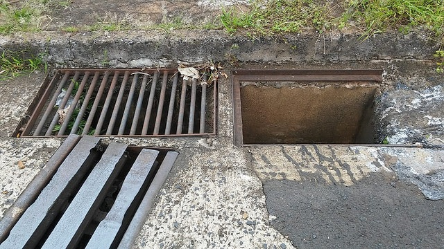
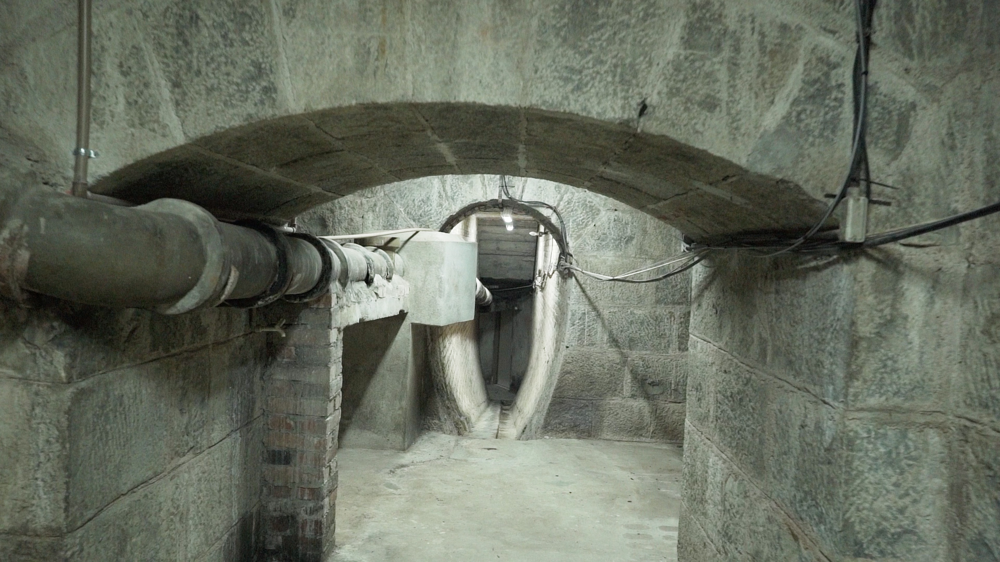
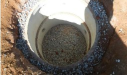
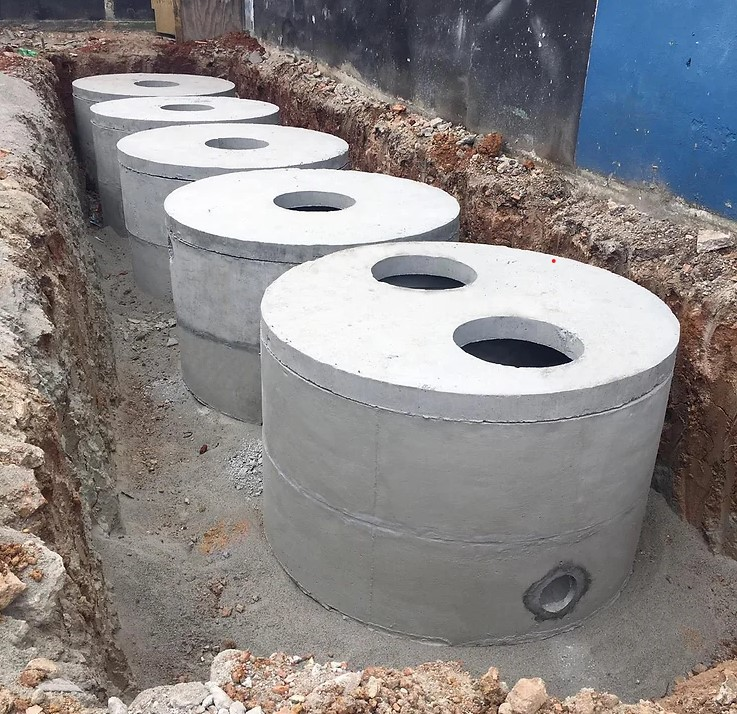

Bocas de Lobo
As bocas de lobo captam água das ruas e a direcionam para a rede de drenagem, impedindo o acúmulo de água nas vias.
Galerias Subterrâneas
Essas galerias transportam a água captada para áreas seguras, como rios e reservatórios, evitando enchentes nas áreas urbanas.
Poços de Infiltração
Poços verticais permitem que a água da chuva seja absorvida pelo solo, reduzindo a pressão sobre o sistema de drenagem.
Reservatórios de Contenção
Reservatórios que armazenam temporariamente a água da chuva, liberando-a gradualmente para o sistema de drenagem.
Pavimentação Permeável

Permite que a água da chuva penetre no solo, auxiliando na recarga dos lençóis freáticos e reduzindo o escoamento.